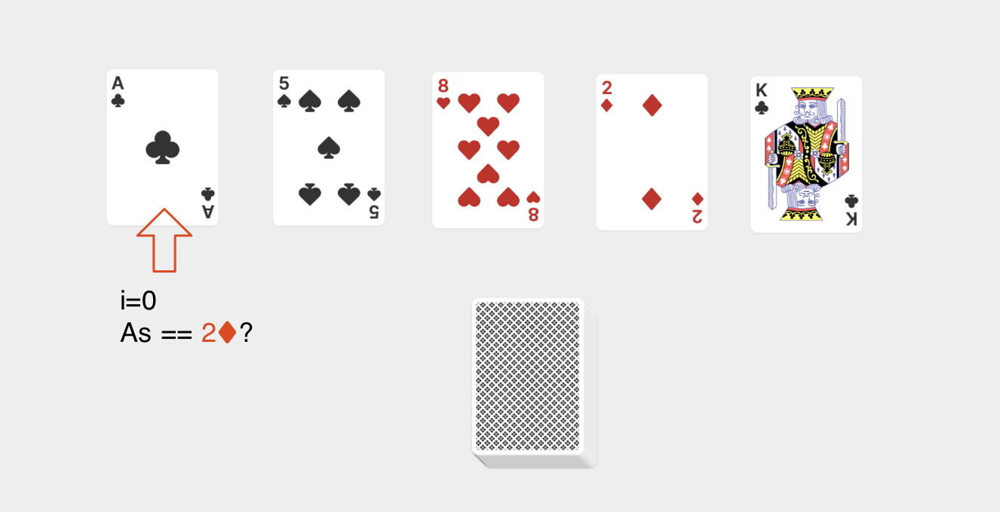
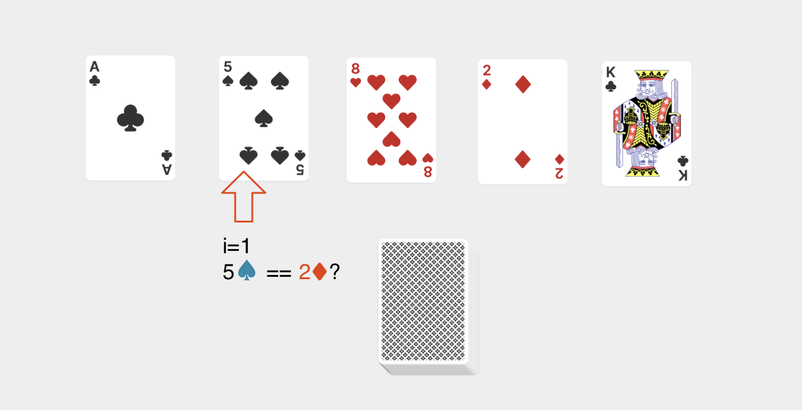
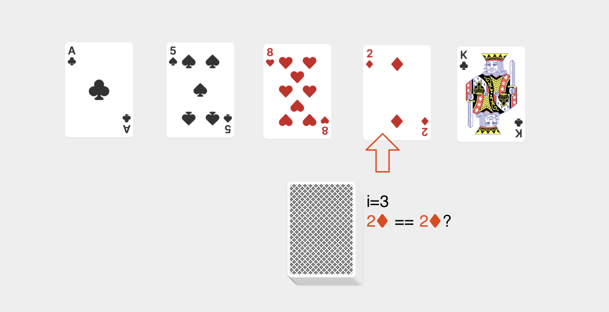
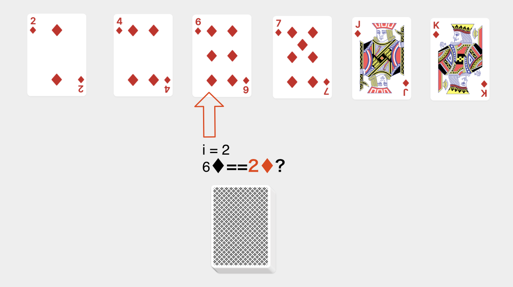
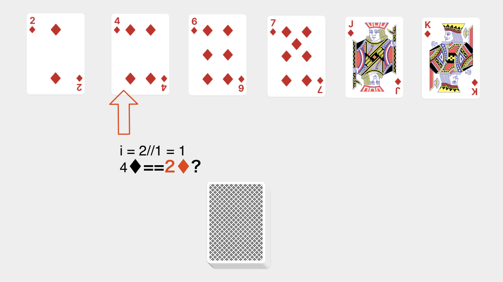
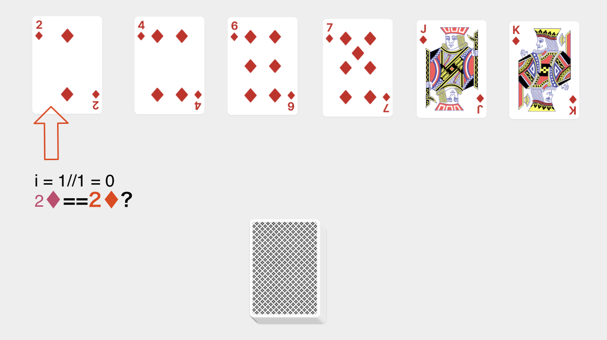
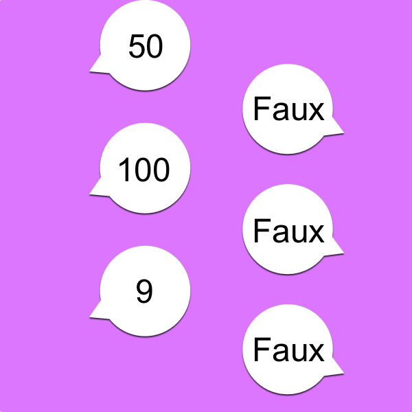
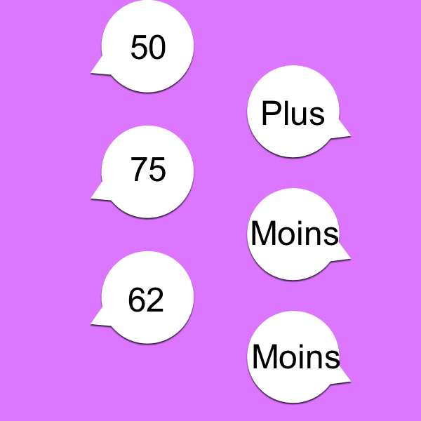
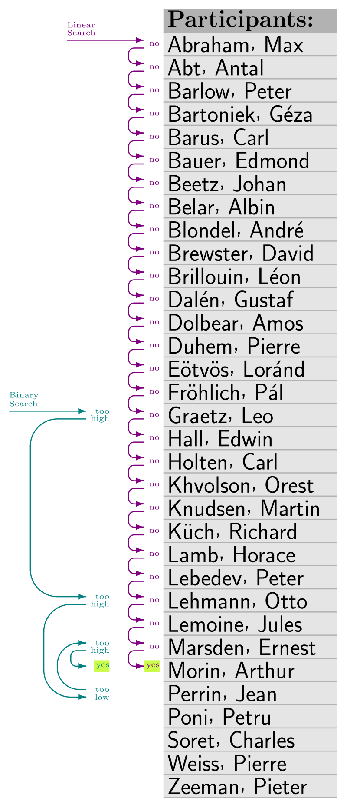

Tri et recherche
Pourquoi écrire des algorithmes? Pour resoudre un problème, comme trier une liste par ordre croissant, un humain y parviendra avec de l’observation, de l’intuition. Il sera peut être difficile d’expliquer sa demarche. Alan Türing (1912-1954), le père de la machine de Türing, cherche à réduire cette part d’intuition en mettant en place un algorithme, qui va guider sa machine, de manière mécanique, jusqu’à la résolution. Les machines n’ont pas d’intuition….
Algorithmes de recherche et de tri
Deux familles d’algorithmes fortement liées:
Algorithmes de recherche: essentiels pour les bases de données. Par exemple: de l’identifiant du client pour retrouver la fiche client. L’algorithme le plus simple est celui de la recherche séquentielle.
Algorithmes de tri: la recherche dichotomique sur une table déjà triée va être beaucoup plus efficace que la recherche sequentielle sur une table non triée
Les 2 méthodes de recherche
- Cas n°1: données non triées
Enoncé: Supposons que notre liste contienne des valeurs (des cartes) issues d’un paquet mélangé (non triées). On cherche dans cette liste la carte du 2 de pique. On part de la carte la plus à gauche, et on remonte la liste vers la droite jusqu’à trouver cette carte (ou ne rien trouver si elle n’est pas dans la liste). La fonction de recherche retournera l’indice i si celle-ci est trouvée, -1 sinon. Il s’agit d’une recherche séquentielle.



- Cas n°2: données triées
Enoncé: Supposons cette fois que la liste contient cartes triées dans un ordre croissant. On cherche le 2 de carreau. On commence par la valeur (carte) du milieu de la liste. Si la carte du milieu de la liste est supérieure à cette carte, on réduit la liste à sa moitié gauche, et on prend à nouveau l’indice du milieu… On procède ainsi, par elimination de la moitié gauche ou droite de la liste jusqu’à trouver la carte (ou ne pas trouver si celle-ci n’y est pas, et que l’on a reduit le paquet à une seule carte). Il s’agit d’une recherche dichotomique.



Recherche séquentielle
Autre exemple
Imaginez un jeu où votre adversaire doit deviner le nombre que vous avez en tête.
A chacune de ses propositions, vous lui répondez VRAI ou FAUX, sans autre aide. S’il doit deviner un nombre entre 1 et 100, dans le PIRE des CAS, il peut proposer jusqu’à 100 nombres pour trouver la bonne valeur que vous avez en tête.

Et si la plage de recherche fait n valeurs, le nombre d’essais peut aller jusqu’à n propositions. On dit que la complexité algorithmique pour résoudre ce problème (trouver la valeur en parcourant tous les nombres possibles), est O(n). C’est-à-dire une classe de complexité linéaire. Il existe un algorithme plus efficaces, comme celui de recherche par dichotomie, dont la complexité est O(log(n)).
Cette différence d’efficacité entre fonctions de n (taille du paramètre d’entrée) est d’autant marquée que le nombre n est grand.
Ce problème s’apparente à celui de la recherche séquentielle dans une table:
Recherche dichotomique
Pour l’aider, vous l’aidez à chacun de ses essais en déclarant PLUS (le nombre que vous avez en tête est plus grand), ou MOINS (plus petit).

Une fois que le nombre a été deviné, vous lui annoncez le nombre d’essais. Ce nombre est souvent inférieur au nombre d’essais pour la recherche séquentielle.
L’algorithme que vous utilisez peut s’écrire en langage naturel:
Questions:
- Faire plusieurs parties avec pour bornes: [0 .. 100]. Quelle est la valeur de c dans chaque cas?
- Quelles sont les puissances m et n de 2 qui encadrent la valeur $2^n < 100 < 2^m$?
- Jouer à ce même jeu, mais avec les bornes: [0 .. 1000]
- Comparer c avec n et m tels que $2^n < 1000 < 2^m$
Le jeu auquel vous avez joué est celui d’une recherche dichotomique. Vous avez cherché un élément (une valeur) dans un ensemble trié (l’ensemble des entiers [0 ..100])
COURS: recherche linéaire
Def: La recherche dans une liste consiste à trouver un élément x dans cette liste, et retourner l’indice de x. Cet algorithme consiste à observer les valeurs de la table, l’une après l’autre, jusqu’à trouver la valeur cherchée x, ou arriver au bout de la table.
Dans le cas d’une table non triée, seul l’algorithme de recherche linéaire est susceptible de donner un resultat.
L’algorithme suivant retourne l’index de x, ou bien -1 si x n’est pas dans la liste.
Questions
- Que retourne l’instruction suivante:
recherche1([i for i in range(0,10,2)], 8)?- Que retourne l’instruction suivante:
recherche1([i for i in range(0,10,2)], 10)?
Efficacité de la recherche linéaire
Def: L’efficacité est mesurée par la COMPLEXITE: La complexité mesure le nombre d’opérations effectuées par la fonction. Ce nombre d’opérations dépend des valeurs des paramètres, mais aussi de la taille de ces paramètres. C’est pourquoi, il est d’usage de considérer plusieurs cas pour mesurer l’efficacité. Elle est en général exprimée comme une fonciton de n, où n est la taille de la liste passée en paramètre.
Quelles sont les opérations que l’on comptabilise? Pour les algorithmes de recherche, ce sont les opérations de comparaisons, dans la boucle non bornée:
Il y a 2 comparaisons par itération: celle de l’opérateur > et celle de =.
On peut définir ce que l’on appelle le pire des cas. Pour une taille n de la liste, les éléments sont rangés de telle sorte que le nombre d’opérations effectuée est maximum. Pour la recherche linéaire, c’est lorsque l’élément x ne se trouve pas dans la liste.
Dans ce cas, le nombre d’opérations de comparaisons est égal à $2 \times n$. Pour simplifier, on dira que ce nombre d’opérations est égal à n.
La complexité est dite linéaire (proportionnelle à N). Le coefficient $2 \times N$ n’a pas d’importance.
COURS: Recherche dichotomique
Def: La recherche dichotomique est l’algorithme le plus efficace lorsque la table dans laquelle on recherche une valeur est triée. Cette recherche consiste à diviser par 2 l’ensemble de recherche. Pour cela, on définit le milieu de l’intervalle de recherche, puis on conserve:
T[borne_inf : milieu-1]six < T[milieu]T[milieu +1 : borne_sup]six > T[milieu]

comparaison du nombre d'essais. Recherche par dichotomie vs recherche sequentielle. wikipedia
Exemple: On recherche un mot commençant par la lettre c dans un dictionnaire contenant 26 mots. Chaque mot commence par une lettre différente. La première de chaque mot du dictionnaire est dans l’ensemble [a .. z]. Le dictionnaire est trié par ordre lexicographique.
Il s’agit d’une liste du type ['a','b','c','d', ..'m', ..,'x','y','z'].
Comme il s’agit d’une liste dont les indices vont de 0 à 25: Le milieu, c’est 25//2 soit 12. la lettre c a un rang inférieur à 12 (lettre m). Donc, dans une première étape de recherche, on prendra la liste entre les rangs 0 et 11 pour rechercher c.
Terminaison de la fonction de recherche dichotomique
Dans le pire des cas, l’intervalle va se réduire jusqu’à se limiter à un seul élément. Celui dont l’index est mid. Avec i_min == i_max
Si l’élément recherché est dans la liste: Cet élément est alors la valeur recherchée x, et la fonction se termine en retournant la valeur de l’index de x dans la liste, mid.
Si l’élément recherché n’est pas dans la liste: alors, soit i_min prend la valeur de mid+1, soit i_max prend la valeur de mid-1. On a alors i_min > i_max, qui est la condition d’arrêt de la boucle.
Efficacité de la recherche dichotomique
Le nombre d’opérations de comparaison, dans le pire des cas, est proportionnel à log(n). n étant égal à la taille de la liste. Et log(n) étant egal au nombre de divisions par 2 qu’il faut effectuer pour que n arrive à 1:
100 -> 50 -> 25 -> 13 -> 7 -> 4 -> 2 -> 1 (6 à 7 divisions)
On dit que la complexité est logarithmique.
Algorithmes de tri
Definition: un algorithme de tri permet d’organiser une collection d’objets selon une relation d’ordre. wikipedia.
Nous nous intéressons ici aux méthodes de tri en place: On modifie directement le tableau à trier en permuttant des éléments, sans créer de nouveaux tableaux.
Le tri peut être effectué avec des éléments numériques. Mais il peut aussi être effectué avec des caractères. On parle alors de tri lexicographique.
On a vu deux algorithmes de tri: le tri par insertion, et le tri par selection. Le langage Python possède une fonction de tri native: sorted, et une méthode de tri associée aux listes: sort.
Le tri par insertion
Principe
Principe: Pour cet algorithme, trier, c’est déplacer des éléments, et y insérer l’élément rangé, depuis le debut déjà trié de la liste, jusqu’à la fin. Voir le detail dans le cours de terminale NSI
Exemple d’algorithme
Question: représenter la main du joueur lorsqu’il reçoit les cartes 6, puis 9 puis Valet. Il utilise l’algorithme de tri par insertion pour les classer. Il possède au debut de la partie: 8, 10, Dame, Roi, As
Programme python
Question: quelle partie du programme python correspond à:
Efficacité du tri par insertion
La mesure la durée d’execution de l’algorithme pour une liste donnée s’appelle la complexité. C’est une mesure en unités de temps. La complexité depend de la taille de la liste. C’est donc une fonction de n, tel que n = len(L).
Pour expérimenter la mesure de cette durée, aller sur pythontutor.
Voici le script utilisé:
Puis executer le script pour avoir la mesure du nombre de steps… Cette mesure dépend de l’argument placé dans la fonction range, utilisée pour créer la liste L. Compléter le tableau:
| liste L | n | nombre de steps pour trier |
|---|---|---|
L = [chr(i+97) for i in range(3)] |
3 | 30 |
L = [chr(i+97) for i in range(6)] |
6 | 63 |
L = [chr(i+97) for i in range(12)] |
12 | … |
L = [chr(i+97) for i in range(24)] |
24 | … |
Analyser alors la fonction steps=f(n)
Question: Ce nombre, augmente t-il de manière régulière avec
n? La fonction temps=f(n) est-elle linéaire?
Le tri par selection
Principe: On recherche le plus petit élément dans la partie non triée et on l’insère à la fin de la partie triée.
Exemple d’algorithme
Questions:
- quelle partie de l’algorithme vous fait penser à la recherche du minimum dans une liste?
- Comment permute-t-on les valeurs de 2 variables a et b? Faut-il utiliser une variable supplémentaire c? Expliquer. Y-a-t-il une partie du programme qui montre une permutation entre éléments de la liste?
Programme python:
Question 3. Comment est réalisée en python la permutation des 2 éléments de liste?
SORT et SORTED
sorted(t)
fonction qui renvoie une liste triée à partir de la liste t. On l’utilise de la manière suivante:
t.sort()
méthode qui modifie la liste t. On peut lui ajouter un paramètre, comme reverse = True:
Tri à partir d’une clé
Lorsque les éléments à trier sont aux-mêmes des sous-listes, le tri est réalisé à partir d’une clé: la clé est l’une des valeurs de la sous-liste.
Par exemple, pour la liste suivante:
M = [("Paulette", 93), ("Marie", 62), ("Thomas", 45), ("Jean", 50)]
Celle-ci pourra être triée par ordre alphabetique du nom: la clé est alors la première valeur de la sous-liste:
Mais elle peut aussi être triée par age des personnes: à partir de la 2e valeur.
Efficacité
La meilleure complexité que l’on peut attendre pour un algorithme de tri est quasi linéaire. Mais il s’agit d’algorithmes plus élaborés que ceux vus en classe.
Ainsi, pour le tri par insertion, le nombre d’opérations f(N) dépend de la disposition des éléments, tel que:
$$a.N < f(N) < a.N^2$$La complexité est linéaire dans le meilleur des cas (liste déjà triée), mais quadratique dans le pire des cas (liste triée à l’envers).
Pour le tri par séléction, le nombre d’opérations est constant, et egal à $b.N^2$. La complexité est quadratique.
Documents
Liens
- cours et animations sur la page du site Lyceum. La complexité y est traitée de manière experimentale.
- Eduscol: Preuve de l’algorithme de recherche dichotomique detail en pdf
- TD avec interface python en ligne: mcoilhac.forge.apps.education.fr